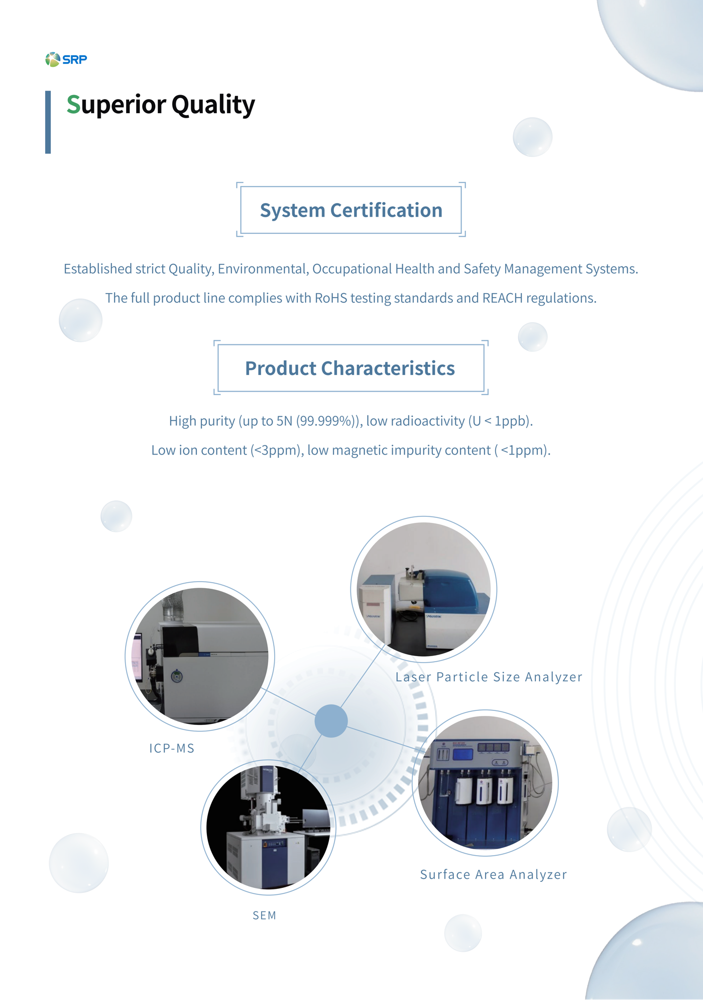

ICP-MS
Agilent 7900 mass spectrometer for trace impurity and elemental analysis.
Quality
SRP's quality story should make the testing chain visible: qualified suppliers, incoming raw material testing, production stability, particle analysis, impurity testing, and product-specific release criteria.
Agilent 7900 mass spectrometer for trace impurity and elemental analysis.
Zhuhai Truth Optics LT2800 particle size analyzer for powder distribution testing.
BSD specific surface area analyzer for BET-style material characterization.
Microtrac S3500 Bluewave particle size analyzer for additional distribution measurement capability.
| Step | Purpose |
|---|---|
| Small sample testing | Initial screening of raw material suitability. |
| Production line testing | Confirms behavior under real production conditions. |
| Batch stability testing | Verifies consistency across repeated supply and processing. |
| Customer certification | Supports qualification for customer-specific applications. |
| Raw material confirmation | Locks approved supply inputs into controlled production. |

Purity control ranges from 3N to 5N+ depending on material family, with low-alpha grades for advanced packaging.
D10, D50, D90, D100, and top-cut values are managed by grade and application requirements.
Incoming and batch tests include foreign matter and magnetic impurity monitoring.
Conductivity is tracked for electronic silica and low-alpha alumina grades where ionic cleanliness matters.
The source deck lists magnetic impurity targets below 1 ppm for selected product characteristics.
Low-alpha products can target U+Th levels below 10 ppb or below 1 ppb depending on grade.